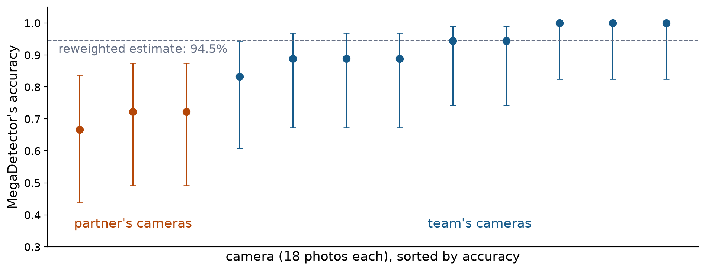
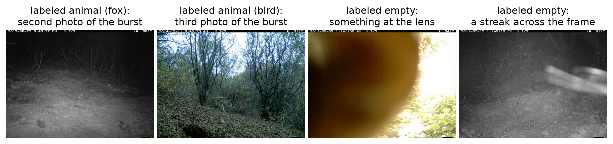

Kish’s effective sample size: uneven weights make the 162 photos worth about 123, and bursts cost more on top of that.
Conditioning on more variables explains more, but each cell holds fewer photos and n_{\text{eff}} falls: the bias–variance trade-off again.
Week 4’s design effect is the same idea, n / n_{\text{eff}}: there the loss came from clusters, here from weights.
Check
A benchmark has 400 easy cases, where a model is right 90% of the time, and 100 hard ones, where it is right 60% of the time. A client’s cases are 70% easy and 30% hard.
What is the model’s accuracy on the benchmark? For the client?
What is the standard error of the client’s estimate?
A question about the team’s own nine cameras: the cameras are fixed groups, so resample bursts within each camera.
A question about new cameras: the team’s nine are a sample of cameras, so resample whole cameras, as Week 5 resampled whole tasks. That gives 90% to 97% for a camera like the team’s.
The population the question is about decides. Your project needs the same choice for its groups.
Question 3: what conditioning misses
Accuracy at each camera

On the partner’s 54 labeled photos: 70.4%, not 94.5%. All three partner cameras are below all nine of the team’s.
Reweighting on infrared did not predict this.
Look at the partner’s mistakes

16 mistakes on the partner’s 54 photos.
7 of the 8 missed animals are the second or third photo of a burst, after the animal left. The label describes the whole burst.
Several of the 8 false alarms show something blurred at the lens or moving through, and the labeler called the burst empty.
What conditioning on infrared missed
As in Week 2, write C = g(Z, U), where U is everything else that matters. Reweighting assumed
which holds when the distribution of U given Z is the same in both populations. It was not:
An omitted variable. New backgrounds, vegetation, and camera placement. Infrared or color captures none of it.
No overlap. The camera matters most, and none of the partner’s cameras is among the team’s nine.
The label means something different. A photo the animal has left still counts as “animal.”
The team’s photos could not show any of these.
The machine-learning names
The joint distribution of a photo X and its label Y factors two ways:
P(X, Y) = P(X)\,P(Y \mid X) = P(Y)\,P(X \mid Y).
Name
What changes
What stays the same
Camera-trap example
Covariate shift
P(X), the photos
P(Y \mid X)
More color photos; new backgrounds
Label shift
P(Y), the right answers
P(X \mid Y)
A park with mostly empty photos
Concept shift
P(Y \mid X), what a label means
—
Bursts the animal has left
Reweighting on Z fixes covariate shift only if Z captures the whole change. New backgrounds are covariate shift that infrared misses.
Reweighting on Y fixes label shift.
Only the client’s labels reveal concept shift.
Telling the populations apart is not measuring the drop
A classifier that tells the benchmark’s photos from the client’s shows that P(X) differs.
It says nothing about P(C = 1 \mid X), so it cannot say how much accuracy changes, or why.
Here it would succeed almost perfectly: every camera has its own fixed background.
Photos that look alike can still differ in accuracy, for example when they were labeled under different rules.
Measuring a drop in accuracy takes labels.
Check
A classifier tells benchmark photos from a client’s photos with 80% accuracy, where 50% would be chance. Which statement does this support?
A. The model’s accuracy on the client’s photos is lower. B. The two sets of photos differ in a way the classifier can detect. C. Reweighting by the classifier’s output will give the client’s accuracy. D. The benchmark’s labels are wrong.
B. The classifier shows only that the photos differ, that is, that P(X) differs. A and C need labels from the client or an assumption, and D does not follow.
Checking takes labeled photos from enough cameras
n \approx \frac{1.96^2 \times 0.70 \times 0.30}{0.05^2} \approx 320 \text{ independent photos for } \pm 5 \text{ points}
The partner’s 54 photos are 18 bursts from 3 cameras: 95% interval 57% to 81% if independent, 56% to 85% resampling bursts.
Bursts raise the 320 further, by Week 4’s design effect.
Spread the photos over all of the partner’s cameras, because cameras differ more than photos within a camera.
Agree first on how to label bursts and blurred close-ups.
Give the bias a direction
A weak sentence:
Your cameras might differ from ours, so the accuracy could change.
A strong one:
MegaDetector’s 93% describes our nine cameras. Reweighted to your mix of color and infrared photos, it predicts 94%, but only if it does as well on your cameras as on ours. On the 54 photos you labeled, it was right on 70% (95% interval 56% to 85%). Many of its mistakes are photos where the label and the photo disagree, so part of the gap is how bursts and close-ups are labeled. Before relying on it, label bursts from all of your cameras under rules we agree on.
The strong version names both populations, the gap, the assumption, the direction, and what would settle it.
Check
A speech-to-text system’s benchmark is 80% studio recordings and 20% phone calls. It gets 95% of words right in studio recordings and 80% in phone calls. A call center’s audio is almost all phone calls.
Is the benchmark’s accuracy likely too high or too low for the call center?
Give one reason the direction could still be wrong, or the size of the gap could be.
Too high. The benchmark’s accuracy is 0.8 \times 0.95 + 0.2 \times 0.80 = 0.92. If 95% of the call center’s audio is phone calls, reweighting gives 0.05 \times 0.95 + 0.95 \times 0.80 \approx 0.81.
The call center’s calls may differ from the benchmark’s calls: other phone lines, accents, background noise, or vocabulary. Then the 80% within phone calls does not carry over.
Your project has groups too
Track
Groups in the data
Reweighting by
Food tagging
dish
the right answer
Pet tagging
breed
the right answer
Human preferences
subreddit (domain)
the type of case
Instruction following
type of instruction (constraint_family)
the type of case
Your groups are your Z. Your client probably has a different mix of them than the benchmark does.
Thursday you choose a mix for your client and reweight your AI system’s accuracy to it.
The Project Description, Section 3, says where the two populations and the direction of the difference go in Milestone 1.
What we did today
Accuracy is E[C] over a population: the marginal of Z times the conditional accuracy, summed.
More benchmark data narrows the interval around the benchmark’s accuracy, not the client’s.
Reweighting keeps the conditional and swaps the marginal. It moves the estimate only as much as Z explains accuracy.
It is a prediction from a model of E[C \mid Z], with Week 4’s standard error and Kish’s effective sample size.
It fails when something besides Z differs, the client has cases the benchmark lacks, or labels mean something else: 94% predicted, 70% observed.
Telling two populations apart compares marginals, not accuracy.
Tell the client the direction of the error, the assumption, and what would settle it.
Thursday, and reading
Thursday: a short introduction to Milestone 1, then Lab 9 together (a tumor model built at three hospitals goes to a new one), then your team reweights its AI system’s accuracy to one client mix.
Checkpoint 7 covers this week’s two lectures. It opens after Thursday’s class and is due Tue Mar 23, the same day as Milestone 1.
Reading: Recht, Roelofs, Schmidt, and Shankar (2019), “Do ImageNet Classifiers Generalize to ImageNet?”, Sections 1 and 2. As you read, ask which part of the joint distribution changed: the images, the right answers, or what the labels mean.